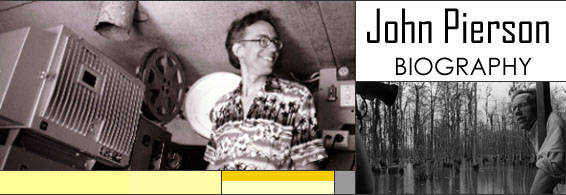

|
John Pierson: Short Bio JOHN PIERSON graduated from NYU Film School in January 1977. Twenty- five years later, he left America behind to show free movies at the world¹s most remote theater, Fiji¹s 180 Meridian Cinema. This adventure with his family became the subject of the Steve James documentary REEL PARADISE. In between, he played many pivotal roles in bringing the work of first-time filmmakers like Spike Lee, Michael Moore, Kevin Smith and Richard Linklater to the screen, a portfolio that Premiere called "a virtual hit parade of the independent movement." These tales are chronicled in John's book Spike, Mike, Slackers & Dykes: A Guided Tour Across a Decade of American Independent Cinema, revised and reissued in 2004 as Spike Mike Reloaded. Peter Biskind calls it "the bible for independents." He was also creator and host of Split Screen, a half-hour magazine-format television show on IFC. Over its four year run, Split Screen put well over 100 indie filmmakers to work and also spawned features ranging from THE BLAIR WITCH PROJECT to HOW¹S YOUR NEWS? Often in partnership with his wife and Grainy Pictures co-president Janet Pierson, John has directed film festivals, staged annual film workshops, and formed a completion funding company. He also executive produced CHASING AMY and once acted opposite Chris Noth. In addition, he appeared last year on Real World Austin as the guy who assigns the kids their 'job.' The Piersons now live in Austin, TX where John teaches in the UT film department. One of his classes "reps" films like CAVITE and JAM. He still awaits the release of the long-delayed Split Screen 3-DVD box set. Miscellaneous
New York University School of Arts, BFA/Cinema Studies, 1974-1976 Press - John, Split Screen, Grainy and otherwise
|